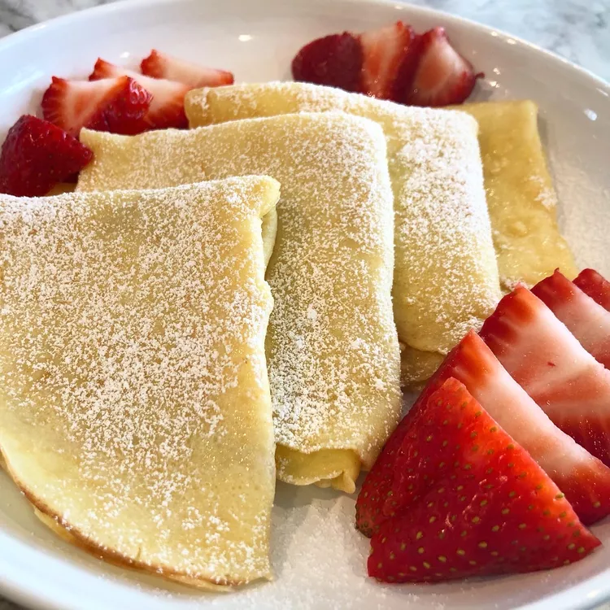

Crepes

How to make crepes
Making homemade crêpes is easier than you think.
You'll find a detailed ingredient list and step-by-step instructions in the recipe below,
but let's go over the basics:
Ingredients
- Flour
- Eggs
- Milk
- Water
- Salt
- Butter
Steps
- Whisk the flour and eggs.
- Gradually add the milk and water.
- Scoop the batter onto a hot griddle.
- Cook until lightly browned on the bottom.
- Flip and continue cooking until done on both sides.